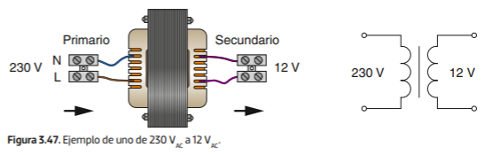
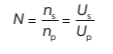

4. El transformador
Un transformador es una máquina eléctrica estática que funciona por el efecto de inducción magnética. Está formado por dos bobinas, denominadas devanados. Uno es el devanado primario, al que se le aplica tensión de entrada, y por el que circula una corriente que induce un campo magnético en el núcleo. Y otro es el secundario, en el que el campo magnético producido por el primero induce una corriente en la bobina, de forma que en sus bornes se genera una tensión proporcional a la del primario, en función del número de espiras de un devanado respecto al otro.

Así, se denomina relación de transformación N a la razón existente entre el número de espiras del secundario respecto al primario o, también, a la razón entre la tensión, en voltios, del secundario respecto al primario.

El símbolo del transformador es el siguiente:

Los transformadores de los equipos electrónicos pueden ser de diferentes tipos. Desde los clásicos, en los que el núcleo magnético está a la vista y las conexiones se realizan soldando cables a sus terminales, a los encapsulados, diseñados para ser soldados directamente sobre placas de circuito impreso.
En numerosas ocasiones, tanto el primario como el secundario disponen de tomas intermedias en sus devanados. Esto permite que el mismo transformador sea usado para diferentes valores de tensión, en función de las tomas utilizadas.

5. El relé
El relé es un dispositivo electromagnético que está formado por una bobina y un contacto o grupo de contactos asociados. Cuando a la bobina se le aplica tensión, el núcleo que está en su interior actúa como un electroimán y atrae a un sistema mecánico que mueve los contactos, cerrando los abiertos y abriendo los cerrados. Si cesa la excitación sobre la bobina, los contactos vuelven a su posición de reposo mediante un resorte. Así, se puede decir que un relé es un interruptor controlado eléctricamente.
Un relé consta de las siguientes partes:

Los símbolos asociados al relé son:

La siguiente figura muestra un ejemplo de configuración de un relé con doble contacto conmutado:

Las características eléctricas más importantes de un relé son las siguientes:
- Tensión de la bobina: es la tensión en voltios que necesita para su correcta excitación. Una tensión inferior puede hacer que el relé no funcione adecuadamente, y una tensión superior podría dañarla.
- Poder de corte de los contactos: se da en amperios y es la corriente máxima que los contactos son capaces de soportar.
Con un relé es posible controlar cargas de potencia, a tensión diferente de la utilizada para excitar la bobina.